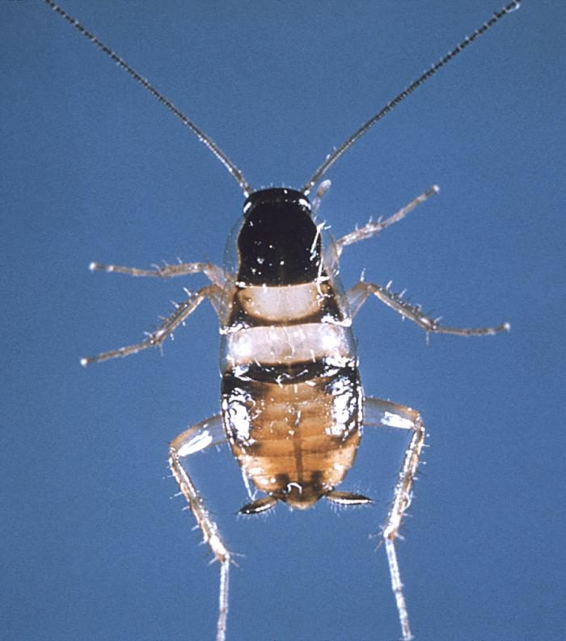

भूरा तिलचट्टाBrown-banded Cockroach
Supella longipalpa · Ectobiidae · INS-0170

- Scientific name वैज्ञानिक नाम
- Supella longipalpa (Fabricius, 1775)
- Family कुल
- Ectobiidae
- Hindi हिंदी
- भूरा तिलचट्टा
- Local names स्थानीय नाम
- bhura tilchatta, tilchatta, brown banded cockroach, cockroach
- Status here यहाँ की स्थिति
- native
- Movement आवागमन
- Resident, here all year
- Known from कहाँ दर्ज
- Others have published records from the wider Awadh–Purvanchal plain, none yet from Basti–Ayodhya अवध–पूर्वांचल से दूसरों के प्रकाशित अभिलेख, बस्ती–अयोध्या से अभी नहीं
- IUCN IUCN
- not evaluated
- Review समीक्षा
- audited and independently read
When to look कब देखें
Present all year. साल भर मौजूद।
भूरा तिलचट्टा / Brown-banded Cockroach
Supella longipalpa (Fabricius, 1775) — Ectobiidae
भूरा तिलचट्टा — छोटा भूरा तिलचट्टा जो घरों में छिपा रहता है। रसोई और बेडरूम में दिखता है। सब कुछ खा जाता है और रोग फैलाता है। गर्मी पसंद करता है।
Quick Identification त्वरित पहचान
| Feature | Description |
|---|---|
| Adult length | 10–14 mm |
| Body colour | Brown |
| Distinctive markings | Two pale brown bands across wings and abdomen |
| Antennae | Long, about same length as body |
| Wings | Both sexes fully winged; wings cover abdomen |
| Legs | Brown, moderately long |
| Nymph | Similar to adult but smaller and wingless |
| Eggs | Contained in ootheca (brown capsule), 8–10 mm |
Field tip: Look for small brown cockroaches in kitchens, bedrooms, and furniture crevices. They prefer warm, dry areas unlike American cockroaches. Active at night; rest in cracks and crevices during day.
हिंदी — कैसे पहचानें: छोटा भूरा तिलचट्टा, पंखों पर दो हल्की पट्टियाँ। रसोई में दिखता है।
Morphology आकारिकी
Biometrics:
| Measurement | Range |
|---|---|
| Adult female length | 11–14 mm |
| Adult male length | 10–12 mm |
| Nymph length | 3–13 mm (varies with instar) |
| Ootheca length | 8–10 mm |
Adult: Small, brown cockroach with characteristic pale brown transverse bands on wings and abdomen, giving the name "brown-banded". Both males and females fully winged, with wings covering the abdomen. Antennae long and segmented, about equal to body length. Eyes moderate. Legs moderately long; adapted for running.
Nymph: Smaller version of adult; wingless; colour similar to adult; banding pattern gradually develops through instars.
Ootheca: Brown, pill-shaped, 8–10 mm long; contains 10–18 eggs; female carries ootheca until just before hatching.
हिंदी: छोटा, भूरा, पीली पट्टियों वाला। लंबी सूँड़ियों वाला तिलचट्टा।
Behaviour & Ecology व्यवहार और पारिस्थितिकी
The Brown-banded Cockroach is a highly successful urban household pest distributed globally. Unlike its larger relatives (American, German cockroaches), it prefers warm, dry locations and is commonly found in kitchens, bedrooms, bathroom vanities, behind baseboards, in furniture, and in light fixtures. The insect is primarily nocturnal; during the day it hides in tight crevices. It is an omnivorous scavenger, feeding on almost any food remnants, paper, fabric, and other materials in the home. The species reproduces rapidly under warm conditions; females produce multiple oothecae throughout their lives, and development from egg to adult can complete in 3–4 months.
The Brown-banded Cockroach differs from the German cockroach in preferring drier conditions and being less aggregated; populations tend to spread throughout a structure rather than concentrating in one area.
हिंदी: घर भर में फैल जाते हैं, रसोई से लेकर बेडरूम तक। गर्म, सूखे स्थान पसंद करते हैं।
Life Cycle / Phenology जीवन चक्र
| Stage | Duration | Notes |
|---|---|---|
| Egg (in ootheca) | 35–50 days | Female carries ootheca for last 3–5 days |
| Nymph | 60–90 days | Multiple instars (typically 6–8); temperature-dependent |
| Adult | 6–12 months | Oviparous; females produce 4–8 oothecae lifetime |
| Cycle | 100–150 days | Multiple overlapping generations per year |
हिंदी: अंडे 6–7 हफ़्ते, निम्फ़ 2–3 महीने, बड़े 6–12 महीने। 4–5 महीने में नई पीढ़ी।
Diet and Feeding Behaviour आहार और भोजन व्यवहार
Omnivorous scavenger; feeds on:
- Kitchen food remnants (bread, sugar, meat, cheese)
- Starch (paper, cardboard, fabrics)
- Pet food
- Soap and cosmetics
- Dead animals and faeces (coprophagy)
The species is highly opportunistic and will consume almost any organic material in a human dwelling. It leaves faecal pellets and produces a characteristic cockroach odour.
Predators / Natural Enemies शत्रु
- Parasitoid wasps: Tetrastichus and other parasites of eggs; less significant than for German cockroach
- Spiders: hunting spiders and web-builders occasionally prey on nymphs and adults
- Entomopathogenic fungi: Beauveria and Metarhizium in high-humidity conditions
- Predatory insects: Athemis wasp, centipedes (occasional)
- Small lizards and geckos: occasional predators in tropical homes
Agricultural / Human Relevance कृषि प्रासंगिकता
The Brown-banded Cockroach is a household nuisance pest found in homes, offices, hospitals, and food establishments worldwide. Beyond the psychological disgust, the cockroach is a potential mechanical vector of pathogens (bacteria, viruses, fungi) from contaminated environments to human food and surfaces. Cockroach faeces, cast skins, and body parts can trigger allergic reactions and asthma, particularly in sensitive individuals.
Management: Control relies primarily on sanitation (removal of food sources, cracks, and clutter), exclusion (sealing entry points), use of desiccating dusts (diatomaceous earth), and insecticides when necessary. Unlike German cockroaches, the Brown-banded Cockroach populations are slower to develop pesticide resistance. Heat treatment of infested buildings is effective.
Expected Locally स्थानीय रूप से अपेक्षित
Not a field record. Written from published accounts for eastern Uttar Pradesh. No confirmed local sighting yet — if you have seen it, that is what the atlas needs.
अभी तक स्थानीय पुष्टि नहीं। यह विवरण प्रकाशित स्रोतों से है, किसी अवलोकन से नहीं।
Expected in human habitations throughout Basti and Ayodhya districts. Present year-round indoors where temperatures are warm; outdoor presence limited to warm months. Most abundant in poorly maintained buildings and dwellings with food waste accumulation. A photograph of the cockroach or ootheca with date would confirm local presence.
Distribution वितरण
Global range: Cosmopolitan; found on all continents in human dwellings.
In India: Throughout India in urban and periurban settings.
In Uttar Pradesh: Common in towns and cities.
In Basti district / eastern UP: Expected in human habitations, particularly in warm households and commercial establishments.
Research Questions शोध प्रश्न
Anyone can investigate these | कोई भी इन प्रश्नों की जाँच कर सकता है
- What is the development time from nymph to adult at room temperature? — Rear nymphs under observation; record time to adult emergence.
- How long can the cockroach survive without food or water? — Isolate individuals; observe survival duration.
- Do cockroaches carry pathogenic bacteria from kitchen waste to human food? — Test for bacterial presence on feet and body.
- What temperature and humidity levels do the insects prefer? — Provide choices; observe aggregation patterns.
- Which household locations (kitchen, bathroom, bedroom) are most heavily infested? — Survey infested homes; map distribution.
Similar Species मिलती-जुलती प्रजातियाँ
| Species | How to tell apart | हिंदी | |
|---|---|---|---|
| Blattella germanica (German Cockroach) | Smaller (8–10 mm); two dark stripes on pronotum (not bands); prefers wet areas | जर्मन तिलचट्टा, छोटा | |
| Periplaneta americana ([[american_cockroach\ | American Cockroach]]) | Much larger (30–40 mm); reddish-brown; different habitat | अमेरिकी तिलचट्टा, बड़ा |
| Blatta orientalis ([[oriental_cockroach\ | Oriental Cockroach]]) | Larger (20–30 mm); blackish; males winged, females wingless; prefers damp | काला तिलचट्टा, बड़ा |
Field rule: Small brown cockroach with two pale transverse bands on wings and abdomen, found in warm dry areas of human homes, long antennae: Brown-banded Cockroach (Supella longipalpa).
Taxonomy & Classification वर्गीकरण
Original description. Described by Fabricius in 1775 in Systema Antliatorum as Blatta longipalpa based on specimens from tropical regions. Transferred to Supella (erected by Shelford, 1911) by later authors.
Subspecies. Monotypic — no subspecies are formally recognised.
Family and order placement. Order Blattodea (cockroaches and termites), family Ectobiidae (smaller cockroaches, formerly Blattellidae). The family comprises numerous pest and synanthropic species.
Phylogenetic notes. Supella longipalpa is a successful coloniser of human habitations, showing remarkable ecological plasticity across diverse climates.
IUCN status rationale. Not evaluated. As a widespread, abundant, cosmopolitan pest species, no conservation assessment is warranted.
Photo Gallery फोटो गैलरी
Photos needed आवश्यक फोटो
- [ ] Adult brown-banded cockroach (भूरा तिलचट्टा)
- [ ] Ootheca (अंडों की थैली)
- [ ] Nymph (छोटा तिलचट्टा)
No photos yet — add field photos to media/species/brown_banded_cockroach/ and run node scripts/sync_photos.js.
References संदर्भ
- Fabricius, J.C. (1775). Systema Antliatorum. Flensburgi et Lipsiae. [original description, as Blatta longipalpa]
- Shelford, R.M. (1911). Malayan Cockroaches. Zoological Record 47. [genus Supella]
- Roth, L.M. (1985). A taxonomic revision of the genus Supella (Dictyoptera: Blattaria: Blattellidae). Journal of Orthoptera Research 6(1): 25–48.
- Gore, J.C. & Schal, C. (2007). Biology, ecology and behaviour of Cockroaches. Annual Review of Entomology 52: 55–80.
- Brenner, R.J. & Stafford, K.C. (2000). Cockroaches and Other Pests in Food Service. American Phytopathological Society, St. Paul, Minnesota.
- GBIF Occurrence Data — Supella longipalpa, India (2023).
Source file: species/fauna/insects/brown_banded_cockroach.md